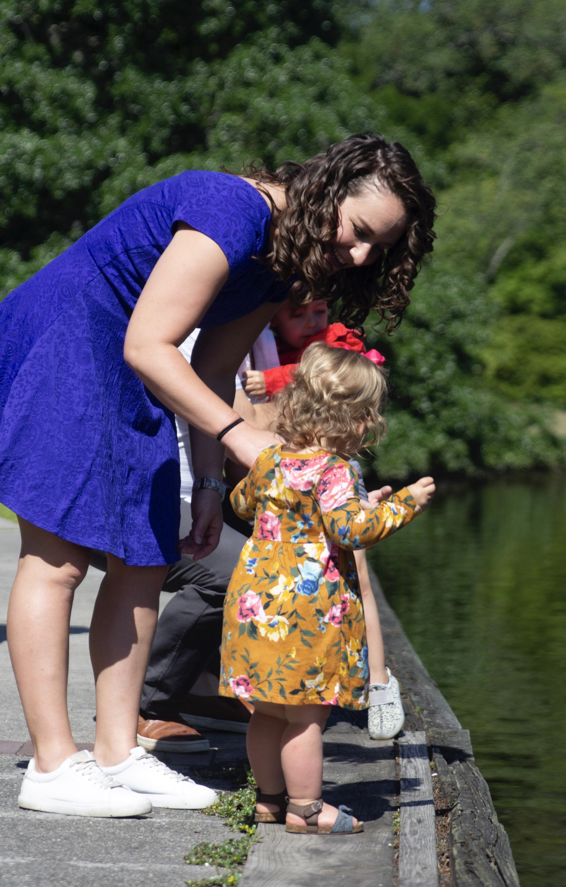
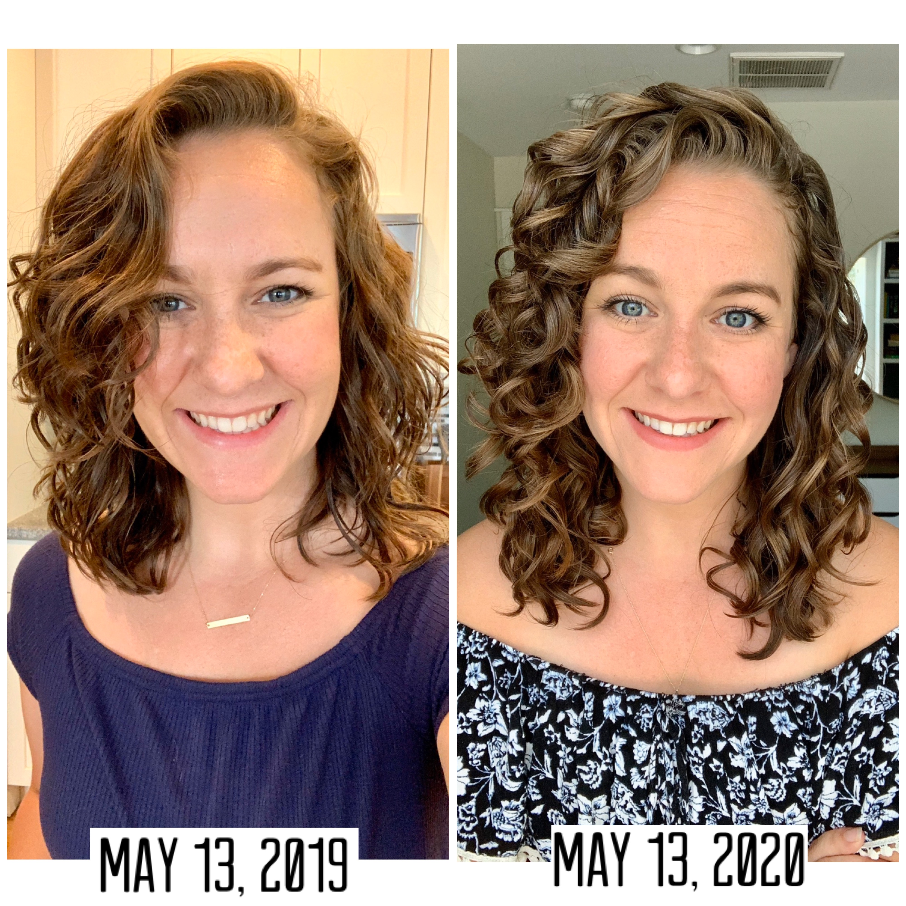

About Me
 Hi! I’m Chelsea. I live in Charleston, SC. I love all things cheese, The Office, and hip hop music/dance. I’m a wife to my soul mate of 6 years, and a Mom to the coolest toddler on the planet (said every Mom about her kid, ever). It was her curls that inspired me to jump into the curly girl method because I wanted her to grow up loving her hair.
Hi! I’m Chelsea. I live in Charleston, SC. I love all things cheese, The Office, and hip hop music/dance. I’m a wife to my soul mate of 6 years, and a Mom to the coolest toddler on the planet (said every Mom about her kid, ever). It was her curls that inspired me to jump into the curly girl method because I wanted her to grow up loving her hair.
I work remotely for a fast paced technology company, for which I wear many hats - Tech Lead, Implementation and Clinical Education Consultant, and Support Analyst. I moved into the technical sector after 5 years as a Master Social Worker, and I’ll never look back. My company took a chance on me when they hired me, but turns out, I’m good at it. I am now teaching myself web development to dive deeper into the technical side of things.
I’ve been doing the CGM since May ‘19. My goals was to go 1 year without sulfates, silicones, and any hot tools, and I made it. I love talking all things curly, so shoot me a message and let’s chat! Live in Charleston? Let me wash and style your hair!
Why I Started the Curly Girl Method

I want to teach hair love to my daughter!
My two sisters and my mom also have curly hair, but neither of us knew how to manage it appropriately. So we all continued to damage our hair with heat and stripping products. I want to change that cycle with my daughter. I am learning all things curly for her
My Progress

ONE YEAR since I began the Curly Girl Method. I had a few goals in mind when starting this journey. My goal was to go a full year without Sulfates, Silicones, Parabens, or any hot tools (diffuser on warm was my only exception).
Did I make it?
YEP and I’d like to share the tips I have learned along with way with you!
1. Every wash day and refresh day is a learning experience! The more you give-in to the hot tools and other methods of styling your hair, the less chances you have for understanding what your hair needs
2. WATER is everything! For juicy clumps and more definition, water should be your best friend. I style with soaking wet hair and I add the product using the #flipcoatscrunch technique. Also, water on refresh days can help reactivate the product. Try some refreshes using only water to dampen your hair. Tip within a tip: Remove all excess water before diffusing or air drying with the #microplopping technique
3. If you style upside down, you gotta REALLLLY bend over. Try to touch your toes (as best you can) and tuck your chin in. Simply tossing my hair in front of my face has cause flat roots, especially in the back, and large section of hair having little to no product.
4. Fix what aint broken. If you are just starting out, try new product application techniques or new CG approved products when you can. Sometimes you don’t know what your hair is missing until you try it.
5. Find other people with your hair type. Determine what hair type you have (#2B, #2C, #3A, etc) by matching your hair with other people on instagram. Search using these hashtags and follow those account with similar hair types. Then also follow the other wonderful hair type accounts out there in support!
6. Do research before purchasing new products. Use websites like the links in my bio. Check if the ingredients are CG approved.
7. It gets easier! It may seem like too many rules to follow, but it gets so much easier and it is so worth it!